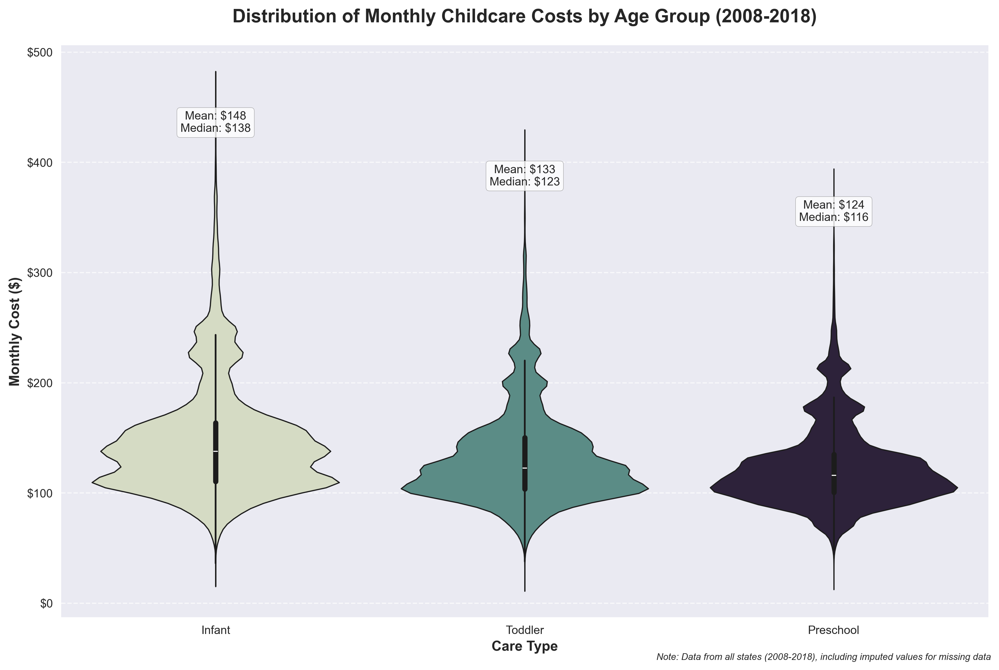

Geographic Analysis
State-wise Cost Distribution

Childcare costs vary dramatically by region, with the Northeast and West Coast showing significantly higher rates.
Key Findings
- Northeast region shows consistently higher costs, with annual expenses exceeding $18,000
- Coastal states (both East and West) demonstrate higher childcare costs compared to inland states
- State-level variations reflect local economic conditions and regulatory requirements
- Clear regional patterns emerge with higher costs concentrated in urban centers
- Data for Indiana and New Mexico was carefully imputed using neighboring states' averages.
Female Labor Force Participation

Areas with higher childcare costs show lower workforce participation rates among parents.
Key Insights
- States with higher childcare costs often show lower female labor force participation rates
- Regional variations in participation rates correlate with childcare accessibility
- Urban areas generally show higher participation rates despite higher costs
- Economic opportunities and childcare availability significantly influence participation rates
- Missing data was handled through a multi-step approach using neighboring states' values
Cost Analysis
Urban/Rural Cost Distribution

Distribution of childcare costs across urban and rural areas shows significant variations.
State Cost Comparison

Comparison of childcare costs across different states reveals significant regional variations.
Trend Analysis
Time Series Analysis

Historical trends in childcare costs across different regions of the United States.
Cost Trends (Spiral View)

Spiral visualization showing the evolution of childcare costs over time.
Statistical Analysis
Correlation Analysis

Comprehensive correlation analysis reveals strong relationships between childcare costs and socioeconomic factors.
Cost Distribution Analysis

Analysis of cost distribution patterns across different categories.